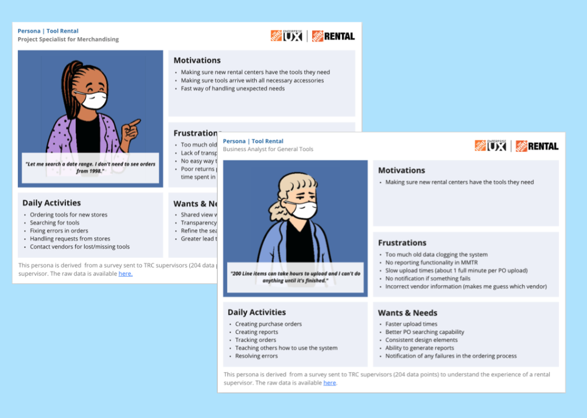
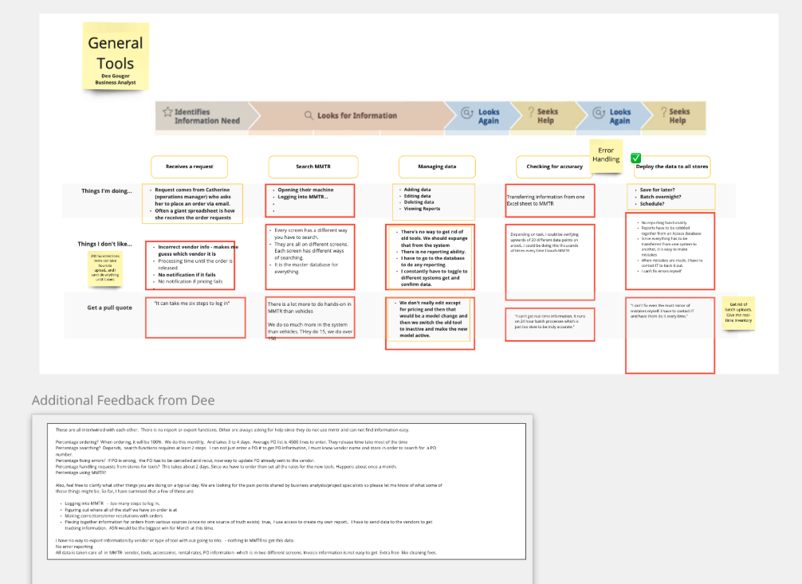
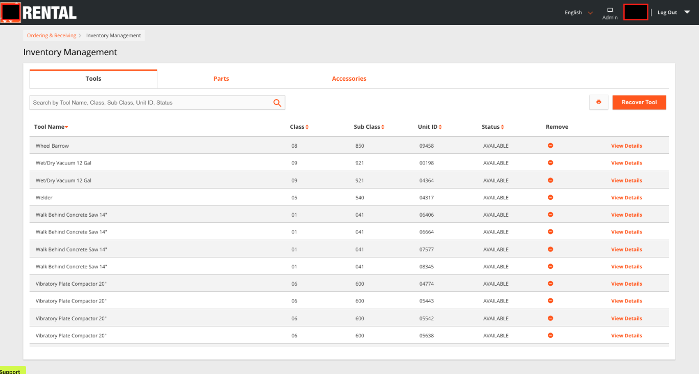
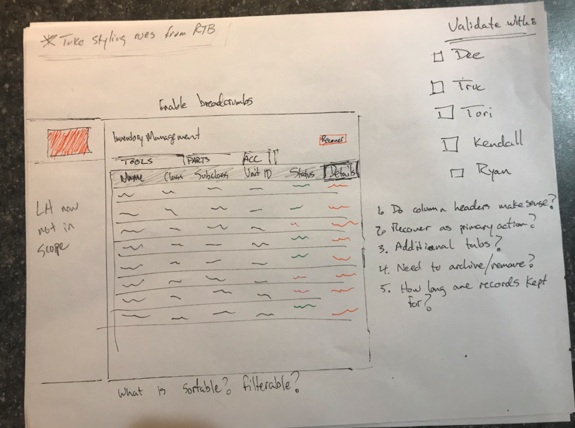
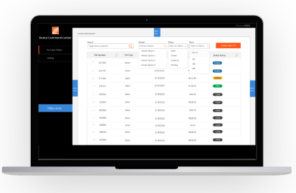

Home Depot needed to retire a 30-year-old ordering system. I inherited a struggling project, challenged what MVP meant, and helped ship something users actually loved.
Home Depot wanted to sunset an ordering system that had been in use since 1990. The new system needed to provide real-time order tracking and handle larger data sets. The legacy system had a hard limit on line items and would silently error out — orders would fail to place and items would effectively disappear into a black hole with no notification to the user.
I inherited this project midstream. Another designer had already started the work using a legacy design library called Pallet. The designs were functional but uninspiring, and the development process was slow and stressful — Pallet required constant modification from the engineering team, adding friction at every sprint.
The initiative aimed to:
For the discovery phase, I began with a review of the previous designer's research to identify what was still valid and usable. I then conducted in-person interviews with inventory admins — the actual users of the system. This was a small and specialized group: only five people used this system at all.
Despite the small sample, the signal was strong. All five users reported virtually the same pain points and wants, giving us high confidence in our findings without needing a larger study. One user turned out to be a super-user with deep system knowledge; the other four used it in a more limited capacity. That distinction shaped how I thought about different use cases.

Based on the interviews, two personas were established that captured the two user archetypes. These personas were referenced for over a year as new stakeholders joined and needed to quickly understand the impact of pain points. Because the user group was so small, observational studies were also conducted alongside the interviews — watching users work in the system revealed insights that structured questions alone wouldn't have surfaced.
Time-on-task was measured for each user group to understand how the system's inefficiencies affected each work stream differently.
Journey maps were created for four different user types: General Tools, Merchandising (getting inventory into new stores), Vehicles, and Large Equipment. The mapping work revealed a nuanced finding — while all user groups reported similar pain points, the frequency with which they experienced those pains varied significantly by role. This informed how we prioritized which fixes would have the broadest impact.

The designs I inherited were built on Home Depot's legacy design system, Pallet. What I found was uninspiring and hard to maintain — not because it was poorly executed, but because the foundation itself was the problem. Developers had to constantly modify Pallet components, creating technical debt and slowing delivery.
I saw an opportunity here.

Rough sketches were used to quickly validate needed functionality with users before committing to high-fidelity work. Given the small user group, this step took about a week. Sketches were also valuable for communicating rapid changes with the product team, who frequently cited long development timelines as a frustration. Showing conceptual changes in rough form — rather than polished mockups — kept the conversation moving without creating false expectations.
For final screens, I made a deliberate choice to move away from Pallet entirely and adopt the ANT design system instead. This decision paid off immediately: development time was reduced by up to 90%. It also freed up half of our design team's capacity, which was reallocated to a new initiative — effectively cutting production costs in half.
All admins worked exclusively on desktop, so responsive design wasn't required. This allowed the team to invest more effort into precision and data density rather than multi-device adaptation.
Mockups were delivered to developers with embedded instructions and direct links to ANT components. I believe developers are users too — removing guesswork from handoff makes the whole team faster.

The first iteration did not succeed. Near-zero user adoption.
The initial version lacked critical functionality, so users continued using the old, slow MMTR software rather than adopt the new system. This failure taught the team an important lesson: we rescoped based on what users actually needed, not just what was on the roadmap. The second iteration addressed those gaps and led to a complete overhaul — and genuine user delight.
Inheriting a project comes with unique challenges. In this case, starting over on the design system — while counterintuitive — was the right call. It unlocked development speed, reduced team stress, and freed up capacity for other work.
Failing early on the first iteration was painful but instructive. It reinforced the value of defining success by user adoption, not just by shipping. The second iteration succeeded precisely because we took the first failure seriously and used it to ask harder questions about what users actually needed.